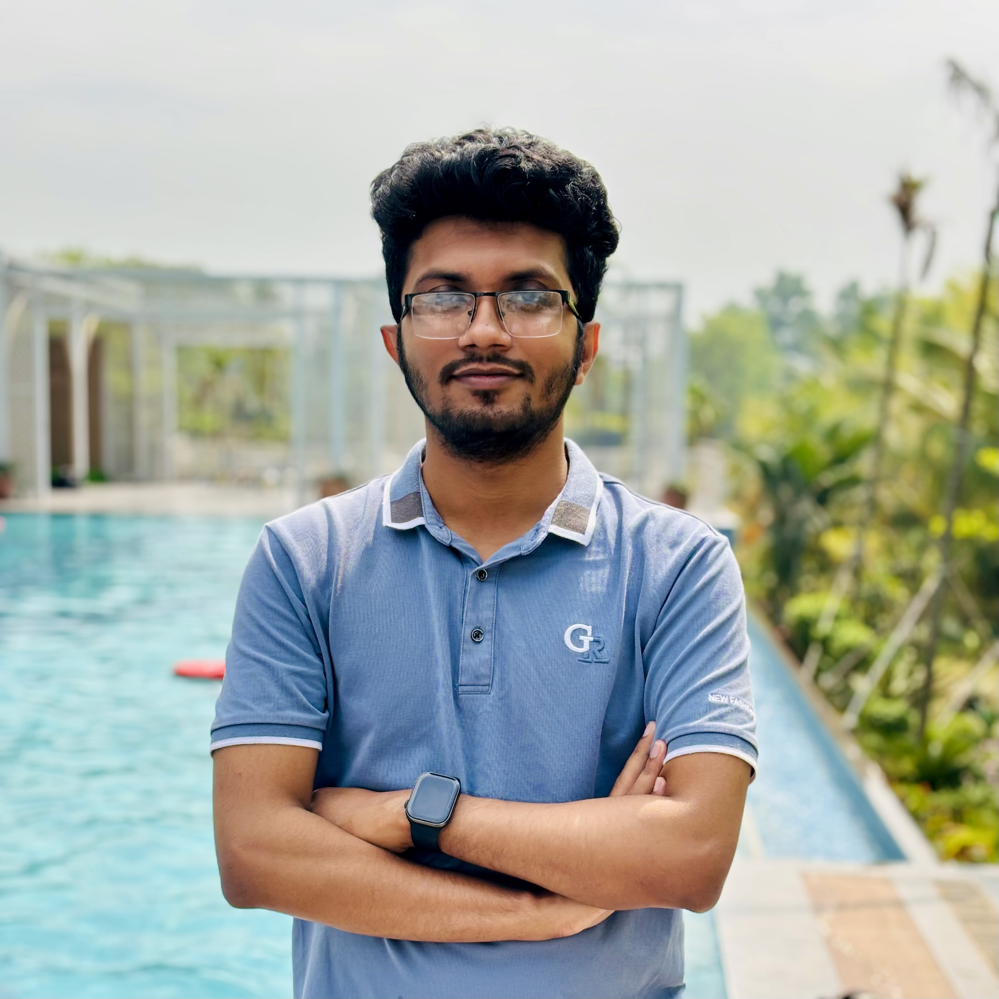
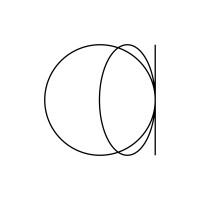
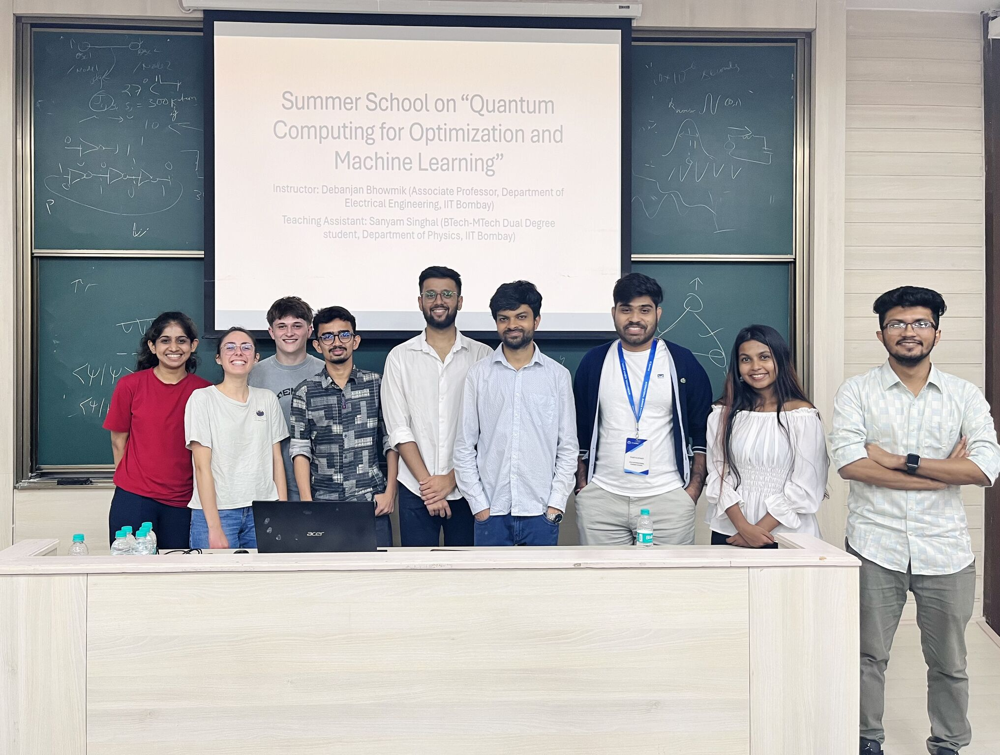

|
Syed Mumtahin Mahmud (Dipto)
I am a Computer Science and Engineering graduate from the University of Dhaka. My academic and research endeavours have been driven by
a deep interest in Machine Learning and Computer Vision. I have actively contributed to research projects involving deep learning techniques,
with a focus on Image Restoration and Vision Transformer architectures. I am highly motivated to further explore these fields through rigorous research and
impactful real world applications.
Currently, I am working as a Research Assistant at the Cognitive Agents and Interaction Lab at the University of Dhaka, where I am working on projects related to image deblurring, medical imaging, and Graph Neural Network.
Email /
Scholar /
LinkedIn /
Github
|

|
Research
I'm interested in image restoration, computer vision, deep learning, and vision transformer architectures. I'm particularly passionate about developing robust algorithms for image deblurring and image analysis applications. I'm excited about advancing AI-driven image analysis and restoration techniques for real-world applications.
|
|
|
University of Dhaka
BS.c in Computer Science and Engineering, (CGPA 3.77/4.00), top 10% of class
Jan 2020 - March 2025
|
|
|
Deblurring in the Wild: A Real-World Dataset from Smartphone High-Speed Videos
Mahdi Mohd Hossain Noki,
Syed Mumtahin Mahmud,
Prothito Shovon Majumder,
Abdul Mohaimen Al Radi,
Sudipto Das Sukanto,
Afia Lubaina,
Md Mosaddek Khan,
Under Review
We present the largest real-world image deblurring dataset, built from smartphone slow-motion videos. By averaging 240 fps frames to create blur and using the center frame as the sharp reference, we generate over 42,000 high-resolution blur-sharp pairs. This makes it roughly 10 times larger and 8 times more diverse than existing datasets. Covering a wide range of indoor and outdoor scenes with various object and camera motions, our benchmark reveals significant performance drops in state-of-the-art models, highlighting its complexity. The dataset and generation scripts are available on HuggingFace.
|
|
|
Vision Transformer and FFT-ReLU Fusion for Advanced Image Deblurring
Syed Mumtahin Mahmud,
Mahdi Mohd Hossain Noki1
Prothito Shovon Majumder,
Abdul Mohaimen Al Radi,
Md. Haider Ali
Md Mosaddek Khan,
Under Review
download
We propose a novel approach to blind image deblurring that combines Vision Transformers with Fast Fourier Transform (FFT) and ReLU sparsity priors. Our method efficiently captures both local and global features while targeting blur-related frequencies, achieving competitive results with state-of-the-art methods at faster inference speeds. Through extensive experiments on benchmark datasets and human evaluations, we demonstrate that we technique produces high-quality results across diverse image types, making it well-suited for real-world applications.
|
|
|
Research Assistant, Cognitive Agents and Interaction Lab, University of Dhaka
Jan 2024 - Present
Advised by Dr. Md Mosaddek Khan
Working on projects related to image deblurring, medical imaging, and Graph Neural Network.
|
|
|
Team Lead (Python Dev), Turing Enterprises, Inc.
October 2024 - Present (Remote)
Led a team of 5 in LLM data creation. Designed and implemented data pipelines and preprocessing workflows to generate specialized training data for Agentic AI behaviors, includ‑
ing multistep reasoning and decision making scenarios. Created specialized training datasets for agentless AI approaches, developing data generation methodologies that enable direct task completion without explicit agent frameworks or intermediary reasoning steps.
|
|

|
Junior Data Analyst, One Data Labs
May 2024 - Septemeber 2024
Actively involved in the meticulous examination and transformation of unprocessed data to extract valuable insights, streamline operations, and support strategic initiatives, ensuring accuracy & integrity.
|
|

|
2024 International Summer School
Indian Institute of Technology, Bombay
Mumbai, Maharashtra, India
Course: Quantum Computing for Machine Learning and Optimization
Participated in the onsite program. Selected as one of only 4 students from Bangladesh for this prestigious international summer school.
June 2024
|
|
{kind=link}